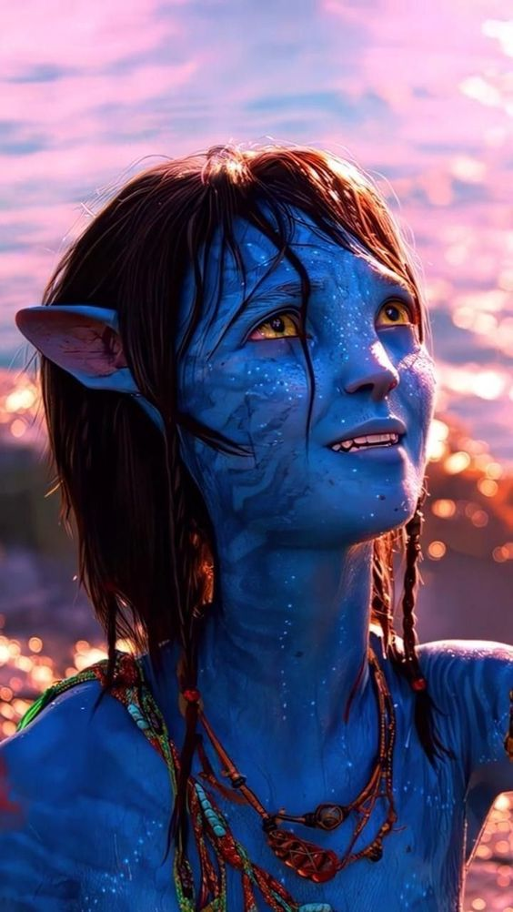

Avatar
The Way of Water
(JamesCameron)
Kiri
Kiri is the “half-breed” daughter of Grace Augustine, who died from a gunshot wound in the first movie. Kiri’s conception remains a “complete mystery”, and it’s not yet known who her biological father is.Meanwhile, Jake and Neytiri have adopted Kiri as one of their own, alongside Neteyam, Lo’ak, and Tuk. There’s also Spider, a young human boy who’s also a child of Pandora, who can you read more about here.Much like Jake and Grace’s Avatars, Kiri has humanoid features, like five fingers instead of four. However, she believes she has a close spiritual connection to Eywa, the Great Mother of all life on Pandora. “I can feel her heartbeat,” she tells Jake, and when she lies down in the forest, the grass and woodsprites pulse around her.
